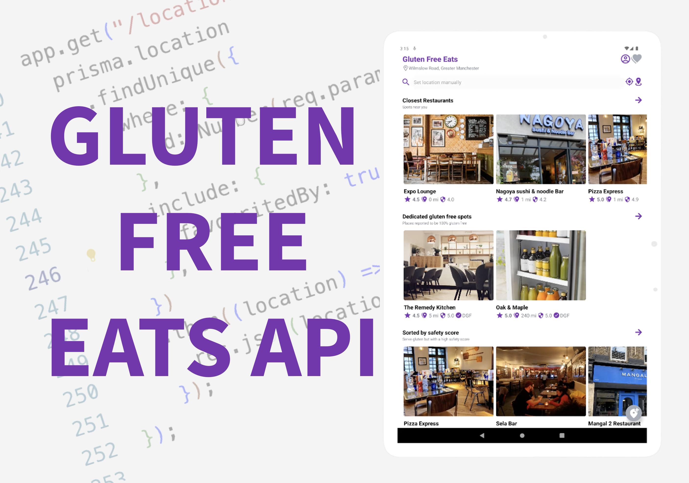
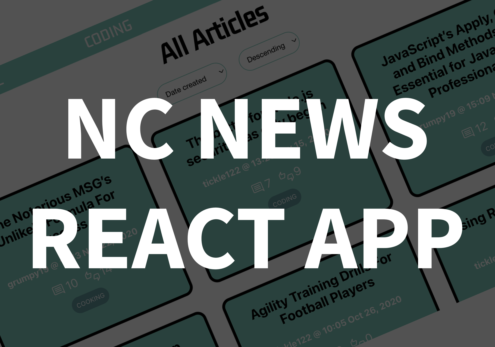

Hey! üëã I'm Caolán
{software developer}

{software developer}
Software Developer in Manchester
I decided to become a programmer because I am inspired by its potential to make people‚Äôs lives easier and better.üë®ü誂Äçüíª I love the creative, problem-solving nature of software engineering and the amazing feeling I get when solving hard problems, especially when working in a team. I trained as a developer on the Northcoders Programming Bootcamp. At Northcoders I developed a front-end project, back-end project and group project utilising JavaScript, Express, Node, PSQL and React.
Previously I worked as a Search Engine Evaluator, where I provided human feedback on the relevancy, accuracy and trustworthiness of pages returned by the world‚Äôs largest search engines in order to help improve their algorithms. üîé
In my spare time I love to travel and learn about other cultures. I have been hiking all over Europe whilst travelling in a self-converted campervan! ü•æ üöê I fell in love with Spain in particular which inspired me to try and learn Spanish üá™üá∏. I also enjoy making videos for my YouTube channel where I teach English as a second language using the Comprehensible Input method. üìπ
Checkout some of my projects!
iOS and Android App to help suffers of Celiac disease or gluten intolerance find safe places to dine out. Made with React Native & Expo.
Click to find out more
REST API that provides a backend for the iOS and Android app Gluten Free Eats. Made with Node.js, Express, Prisma ORM and Firebase Admin SDK.
Click to find out more
API designed to be the backend of a news app with similar functionality to Reddit.com. Made with Node.js, Express and PSQL. Tested with Jest.
Click to find out more
A mobile-first web application made with React. It is designed to be the front-end of a news app with similar functionality to Reddit.com. The app consumes my Northrcoders News API.
Click to find out more